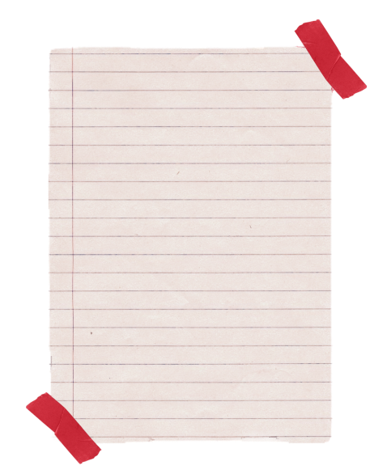
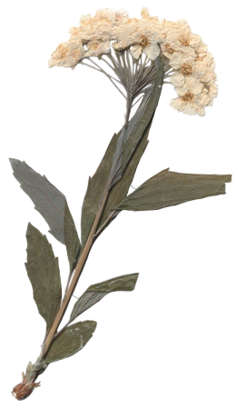
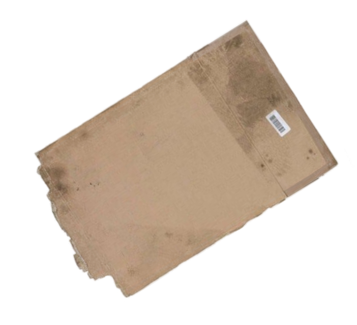
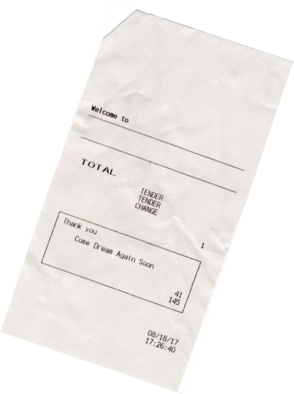

Магазин «Тихий урожай» создан для тех, кто устал от пакетиков с бумажным вкусом и хочет пить настоящий чай и кофе. Мы отбираем сорта, которые пахнут садом, а не химией, и привозим их в упаковке, которую приятно держать в руках.




